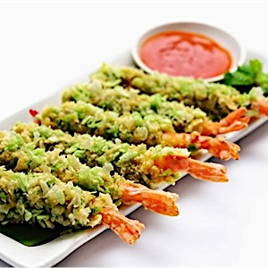
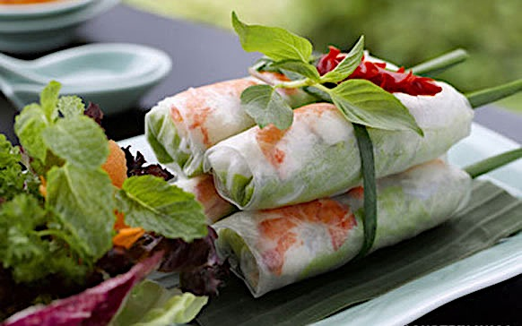
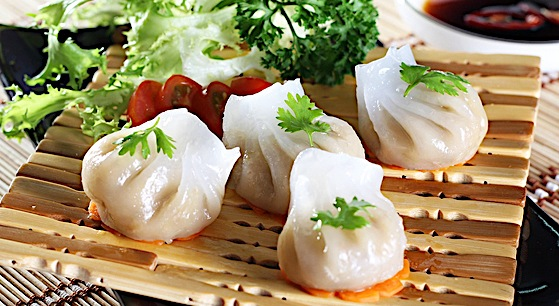
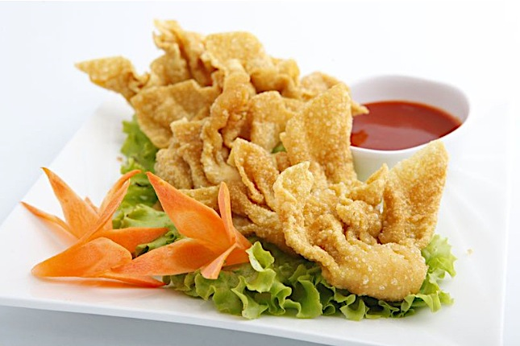
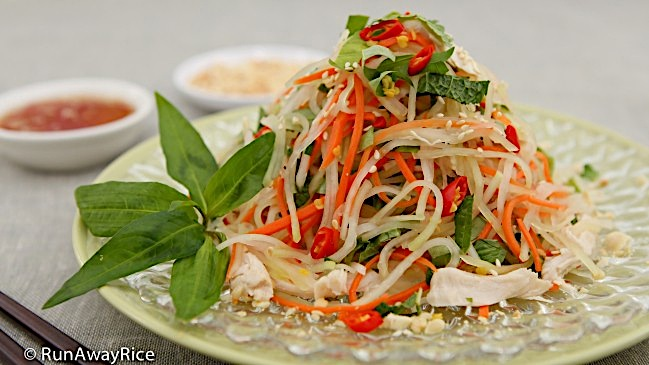
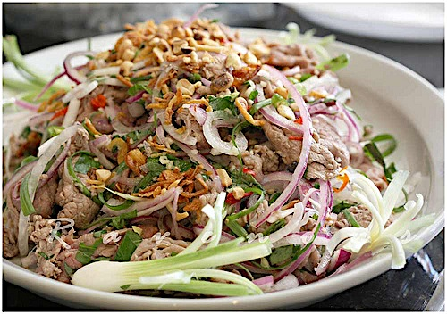
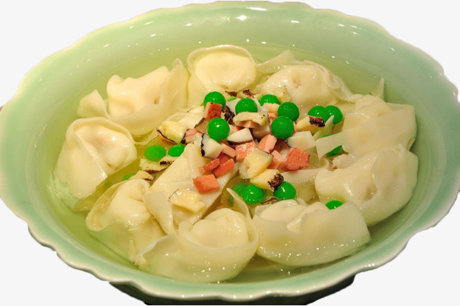
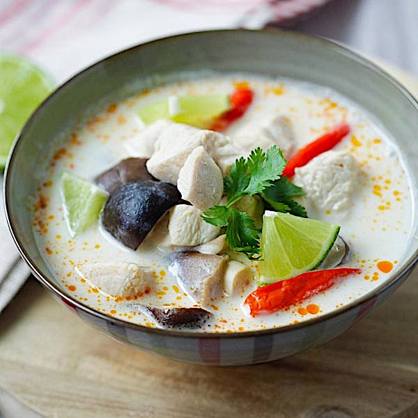
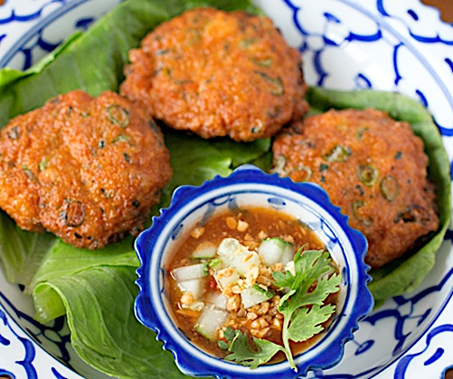

1.Nems..........10.-/3p
Rouleux de printemps mode vietnamienne au choix: crevettes et viande ou légumes + sauce de poisson aigre-douce.
2.Tôm cốm/Crevettes en robées..........10.-/5p
Copeaux de noix de coco, pépites de riz gluant vert+sauce aigre-douce.
3.Gỏi cuốn/Rouleaux d'été..........10.-/2p
Crevettes,vermicelles de riz,pousses de soja,salades +herbes asiatiques+sauce maison.
4.Raviolis,xíu mai..........8.-/4p
Raviolis aux crevettes, xiu mai à la viande et crevettes à la vapeur+sauce de soja.
5.Hoành thánh chiên/Raviolis frits...........8.-/4p
Aux crevettes et porc+sauce aigre-douce.
6. Salade de papaye verte..........10.-
Colrave,carottes,pousses de soja,cacahuètes,ail,oignons frits,piments,citron vert,herbes asiatiques.(avec crevettes +3.-)
7.Gỏi bò tái chanh/Salade de boeuf..........19.-
Émincé de steak de boeuf,citron vert,échalottes,oignons,ail,piments,herbes asiatiques.
8. Soupe de raviolis..........12.-

9.Soupe Tom Yum Kung (Thai)..........12.-
Soupe aux crevettes,champigons,galanga,feuille de citron vert,citronnelles,piments,tomates.
10.Soupe Tom Kha Kai (Thai)..........12.-
Soupe au poulet au lait de coco,citronnelles,feuille de citron vert,galanga,champignons.
11.Chả cá/Gallette de poisson (Thai)..........8.-/3p
Pâte de poisson,haricots verts,curry rouge + sauce aigre-douce.
*****Plateau de bonheur*****.........34.-/2pers
2 rouleux d'été,2 crevettes en robées,2 galettes de poisson,2 rouleaux de printemps,2 raviolis+sauce aigre-douce.